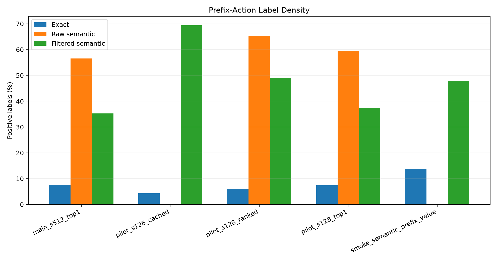
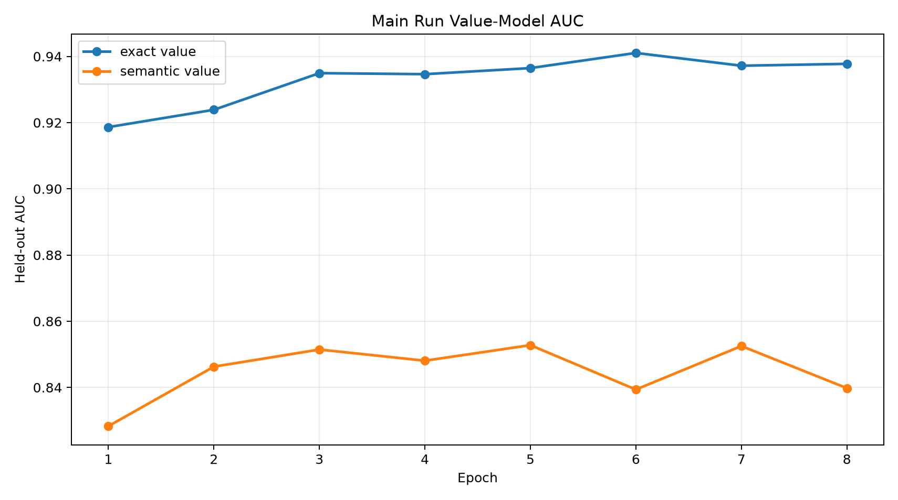
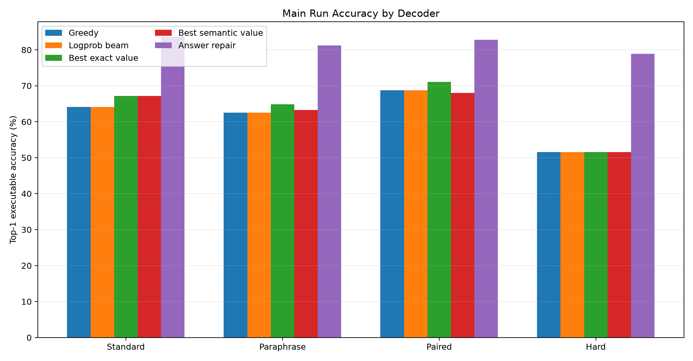
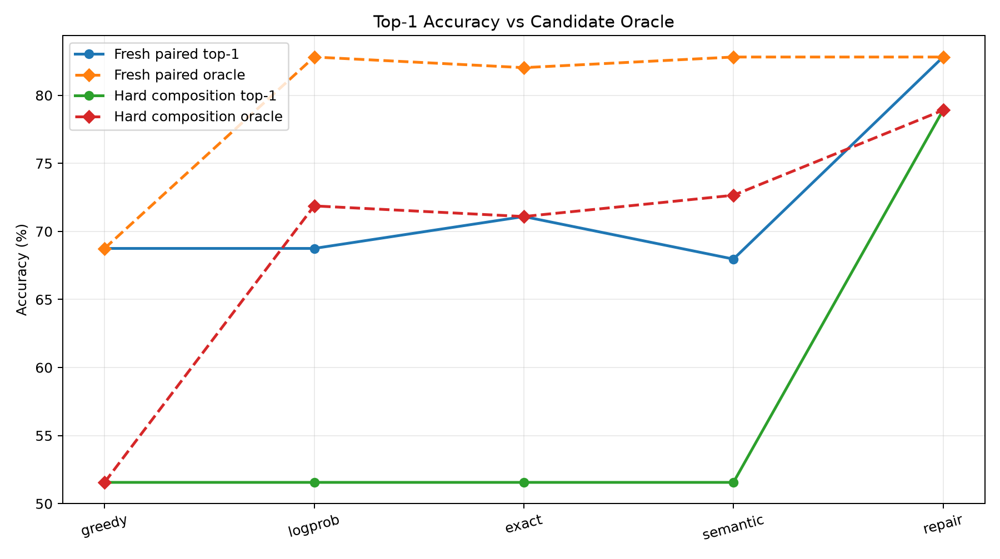
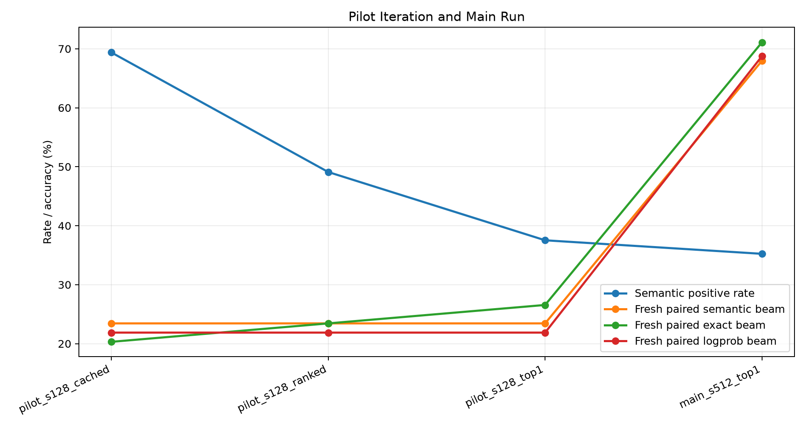

Qwen Semantic Prefix Value Model
Abstract
This experiment tests whether a value model trained on semantic reachability labels can guide no-answer bytecode search better than an exact-prefix verifier. A frozen Qwen 4B model encodes natural-language prompts. A trained compiler head emits typed stack-machine bytecode distributions. A value model then scores partial bytecode actions during constrained beam search.
The central target is not whether a partial program matches a canonical trace. Instead, the semantic label asks whether bounded executable completion from the post-action VM state can still reach the target answer. Raw reachability was too broad, so the final main run trained on the top-1 reachable action per prefix by compiler prior while preserving canonical exact positives.
The main result is negative but informative. Exact-prefix value supervision reached AUC 0.941 and improved fresh-paired top-1 accuracy from 68.8% greedy / 68.8% logprob beam to 71.1% with beam_exact_w0.5. Semantic value supervision reached AUC 0.853, but its best fresh-paired beam was 68.0% with beam_semantic_w0.25. On hard composition, semantic value matched the logprob top-1 result at 51.6%, while answer-verified repair reached 78.9%. The gap to repair remains mostly a ranking/calibration problem rather than a candidate-generation problem.
Method
The task generator emits mixed natural-language tasks with executable bytecode over a compact stack VM. The opcode set includes arithmetic, comparison, min/max, modulus, and two lookup tables. Programs are normalized to a fixed length and executed invisibly for evaluation.
For each prompt, frozen Qwen hidden states are pooled by a trained compiler head. The head predicts opcode logits, argument logits, and an auxiliary answer head. Typed beam search expands only stack-valid actions. During training-data collection, every candidate action receives:
exact: 1 if the action keeps the prefix equal to the canonical target program.raw semantic: 1 if bounded suffix search can still complete to the target answer from the post-action state.filtered semantic: 1 for canonical exact positives plus the top reachable action per prefix by compiler prior.
The value models do not see the final answer at decode time. Answer-verified local repair is included only as an upper-bound diagnostic because it chooses candidates by executing them against the known target answer.
Runs
The experiment used a smoke run, three 128-example pilots, and one 512-example main run. The smoke run validated the full artifact path. The first pilot showed that raw semantic reachability was too dense. The second and third pilots introduced per-prefix rank filtering. The main run used the stricter top-1 semantic target.
Main run hardware: NVIDIA RTX 6000 Ada Generation.
Label Density

Exact labels are sparse; raw semantic reachability is broad; top-1 filtering reduces but does not eliminate semantic-only positives.
| run_dir | prefix_samples | exact_positive_rate | raw_semantic_positive_rate | semantic_positive_rate | semantic_extra_positive_rate |
|---|---|---|---|---|---|
| main_semantic_prefix_value_s512_top1 | 37946 | 7.7% | 56.6% | 35.2% | 27.5% |
| pilot_semantic_prefix_value_s128_cached | 16930 | 4.4% | n/a | 69.4% | 65.0% |
| pilot_semantic_prefix_value_s128_ranked | 12071 | 6.1% | 65.3% | 49.1% | 43.0% |
| pilot_semantic_prefix_value_s128_top1 | 9835 | 7.5% | 59.5% | 37.5% | 30.0% |
| smoke_semantic_prefix_value | 1288 | 13.9% | n/a | 47.8% | 33.9% |
Value Training

The exact-prefix value model reaches higher AUC than the semantic value model, but the semantic model is trained on a broader and noisier target.
In the main run, exact-prefix positives were 7.7% of train prefix actions. Raw semantic positives were 56.6%, and filtered semantic positives were 35.2%.
Decoder Results

Exact-prefix value improves fresh paired accuracy; semantic value does not outperform exact-prefix value in the main run.
| split | decoder | accuracy | oracle | program_exact |
|---|---|---|---|---|
| fresh_standard | greedy | 64.1% | 64.1% | 46.1% |
| fresh_standard | beam_logprob | 64.1% | 82.8% | 46.1% |
| fresh_standard | beam_exact_w0.25 | 67.2% | 83.6% | 46.9% |
| fresh_standard | beam_semantic_w4 | 67.2% | 83.6% | 44.5% |
| fresh_standard | local_answer | 83.6% | 83.6% | 49.2% |
| fresh_paraphrase | greedy | 62.5% | 62.5% | 50.0% |
| fresh_paraphrase | beam_logprob | 62.5% | 79.7% | 50.0% |
| fresh_paraphrase | beam_exact_w2 | 64.8% | 81.2% | 50.8% |
| fresh_paraphrase | beam_semantic_w0.25 | 63.3% | 79.7% | 50.0% |
| fresh_paraphrase | local_answer | 81.2% | 81.2% | 53.1% |
| fresh_paired | greedy | 68.8% | 68.8% | 50.0% |
| fresh_paired | beam_logprob | 68.8% | 82.8% | 50.0% |
| fresh_paired | beam_exact_w0.5 | 71.1% | 82.0% | 50.0% |
| fresh_paired | beam_semantic_w0.25 | 68.0% | 82.8% | 50.0% |
| fresh_paired | local_answer | 82.8% | 82.8% | 51.6% |
| hard_composition | greedy | 51.6% | 51.6% | 32.8% |
| hard_composition | beam_logprob | 51.6% | 71.9% | 32.8% |
| hard_composition | beam_exact_w0.25 | 51.6% | 71.1% | 32.8% |
| hard_composition | beam_semantic_w2 | 51.6% | 72.7% | 32.8% |
| hard_composition | local_answer | 78.9% | 78.9% | 35.2% |
Candidate Oracle Gap

Beam oracle accuracy remains much higher than top-1 no-answer selection, especially before answer-verified repair.
Fresh paired beam-logprob oracle accuracy was 82.8%, while top-1 logprob accuracy was 68.8%. Hard-composition beam-logprob oracle accuracy was 71.9%, while top-1 logprob accuracy was 51.6%. The value models did not reliably convert that oracle slack into top-1 gains.
Iteration

Pilot runs tightened semantic labels from raw reachability toward a top-1 reachable-action target before the main run.
The iteration changed the semantic label from raw reachability to rank-filtered reachability because raw reachability made too many actions positive. This improved target sharpness, but did not make semantic value dominate exact-prefix value in the final main run.
Conclusion
Bounded semantic reachability is a real, learnable signal: it creates many non-canonical positive actions and the semantic value model reaches held-out AUC above 0.85 during training. However, this form of semantic value supervision is not enough to close the no-answer beam-ranking gap. In the main run, exact-prefix value produced the best fresh-paired top-1 result, and semantic value was mostly neutral relative to logprob search.
The next useful step is not another binary reachability classifier. The result points toward a calibrated action-value target: predict the best achievable completion score or success probability under the remaining search budget, not merely whether any bounded completion exists.